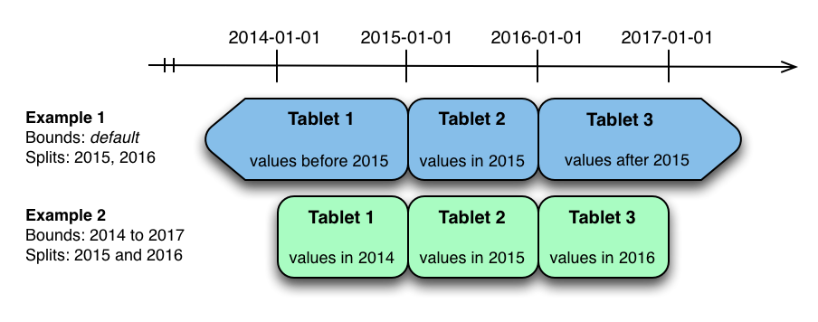

Kudu Schema Design ( 模式设计 )
原文链接 : http://kudu.apache.org/docs/schema_design.html
译文链接 : http://cwiki.apachecn.org/pages/viewpage.action?pageId=10813632
Apache Kudu Schema Design ( Apache Kudu 模式设计 )
Kudu 表具有与传统 RDBMS 中的表类似的结构化数据模型。模式设计对于实现 Kudu 的最佳性能和运行稳定性至关重要。每个工作负载都是独一无二的，没有一个最合适每个表的单一模式设计。本文档概述了 Kudu 的有效模式设计理念，特别注意与传统 RDBMS 模式所采用的方法不同的地方。
在高层次上，创建 Kudu 表有三个问题：列设计，主键设计和分区设计。其中只有分区对于熟悉传统的非分布式关系数据库的人来说将是一个新的概念。最后一节讨论 改变现有表的模式 ，以及关于模式设计的 已知限制 。
The Perfect Schema ( 完美的模式 )
完美的模式将完成以下工作：
- 数据将以这样的方式进行分发，即读取和写入在 tablet servers 上均匀分布。这受到分区的影响。
- Tablets 将以均匀，可预测的速度增长， tablets 的负载将随着时间的推移而保持稳定。这最受影响分区。
- 扫描将读取完成查询所需的最少数据量。这主要受到主键设计的影响，但分区也通过分区修剪来起作用。
完美的模式取决于数据的特性，需要做的事情以及集群的拓扑。模式设计是您最大限度地发挥 Kudu 集群性能的最重要的一件事。
Column Design ( 列设计 )
Kudu 表由一个列或多个列组成，每个列都有一个定义的类型。不属于主键的列可能为空。支持的列类型包括：
- boolean
- 8-bit signed integer
- 16-bit signed integer
- 32-bit signed integer
- 64-bit signed integer
- unixtime_micros (从 UNIX 时代起，64 位微秒)
- single-precision (32-bit) IEEE-754 floating-point number ( 单精度，32位，IEEE-754 浮点数 )
- double-precision (64-bit) IEEE-754 floating-point number ( 双精度，64位，IEEE-754 浮点数 )
- UTF-8 encoded string (up to 64KB uncompressed) ( UTF-8 编码字符串（高达 64KB 未压缩） )
- binary (up to 64KB uncompressed) ( 二进制（高达 64KB 未压缩） )
Kudu 利用强类型的列和柱状磁盘存储格式来提供高效的编码和序列化。为了充分利用这些功能，列应该被指定为适当的类型，而不是使用字符串或二进制列来模拟 'schemaless' 表，否则可能会进行结构化。除了编码之外，Kudu 允许按照每列进行压缩。
Column Encoding ( 列编码 )
可以根据列的类型，使用编码创建 Kudu 表中的每个列。
表 1. Encoding type ( 编码类型 )
| Column Type ( 列类型 ) | Encoding ( 编码 ) | Default ( 默认 ) |
|---|---|---|
| int8, int16, int32 | plain, bitshuffle, run length | bitshuffle |
| int64, unixtime_micros | plain, bitshuffle, run length | bitshuffle |
| float, double | plain, bitshuffle | bitshuffle |
| bool | plain, run length | run length |
| string, binary | plain, prefix, dictionary | dictionary |
plain Encoding ( 普通编码 )
数据以其自然格式存储。例如，int32 values 作为固定大小的 32 位 little-endian integers 存储。
Bitshuffle Encoding
重新排列一组值以存储每个值的最高有效位，其次是每个值的第二个最高有效位，依此类推。最后，结果是 LZ4 压缩。 Bitshuffle 编码对于具有许多重复值的列或按主键排序时少量更改的列是不错的选择。 bithuffle 项目对性能和用例有很好的概述。
Run Length Encoding ( 运行长度编码 )
通过仅存储值和计数，在列中压缩运行（连续重复值）。当按主键排序时，运行长度编码对于具有许多连续重复值的列是有效的。
Dictionary Encoding ( 字典编码 )
构建了唯一值的字典，并且每个列值都被编码为字典中的相应索引。字典编码对于基数较低的列是有效的。如果给定行集的列值由于唯一值的数量太高而无法压缩，则 Kudu 将透明地回退到该行集的纯编码。这在 flush 过程中进行评估。
Prefix Encoding ( 前缀编码 )
公共前缀在连续列值中进行压缩。前缀编码对于共享公共前缀的值或主键的第一列可能有效，因为行按 tablet 内的主键排序。
Column Compression ( 列压缩 )
Kudu 允许使用 LZ4 ， Snappy 或 zlib 压缩编解码器进行每列压缩。默认情况下，列未压缩存储。如果减少存储空间比原始扫描性能更重要，请考虑使用压缩。
Primary Key Design ( 主键设计 )
每个 Kudu 表必须声明一个主键索引由一个或多个列组成。主键列必须不可为空，并且可能不是布尔值或浮点型。在表创建期间设置后，主键中的列集合可能不会更改。像 RDBMS 主键一样，Kudu 主键强制执行唯一性约束;尝试插入与现有行具有相同主键值的行将导致重复的键错误。
与 RDBMS 不同，Kudu 不提供自动递增列功能，因此应用程序必须始终在插入期间提供完整的主键。行删除和更新操作还必须指定要更改的行的完整主键; Kudu 本身不支持范围删除或更新。在插入行之后，列的主键值可能不会被更新;但是，可以删除该行并重新插入更新的值。
Primary Key Index ( 主键索引 )
与许多传统关系数据库一样，Kudu 的主键是 clustered index ( 聚集索引 )。 tablet 中的所有行都保持主键排序顺序。在主键上指定相等或范围约束的 Kudu 扫描将自动跳过不能满足谓词的行。这允许通过在主键列上指定相等约束来有效地找到各行。
注意
主键索引优化适用于单个 tablet 上的扫描。有关扫描如何使用谓词跳过整个 tablet 的详细信息，请参阅 分区修剪 部分。
Partitioning ( 分区 )
为了提供可扩展性，Kudu 表被划分为称为 tablets 的单元，并分布在许多 tablet servers 上。行总是属于单个 tablet 。将行分配给 tablet 的方法由在表创建期间设置的表的分区决定。
选择分区策略需要了解数据模型和表的预期工作负载。对于写入繁重的工作负载，重要的是设计分区，以使写入分散在 tablet 上，以避免单个 tablet 的超载。对于涉及许多短扫描的工作负载，如果所有扫描的数据位于同一个 tablet 中，那么远程服务器的开销占主导地位，可以提高性能。了解这些基本权衡是设计有效的分区模式的核心。
重要
没有默认分区
Kudu 在创建表时不提供默认分区策略。建议预期具有较大读写工作负荷的新表至少与 tablet servers 一样多的 tablets 。
Kudu 提供了两种类型的分区：range partitioning ( 范围分区 ) 和 hash partitioning ( 哈希分区 )。表也可能具有 多级分区 ，其结合范围和哈希分区，或多个散列分区实例。
Range Partitioning ( 范围分区 )
范围分区使用完全有序的分区键分配行。每个分区分配了范围分区密钥空间的连续段。密钥必须由主键列的子集组成。如果范围分区列与主键列匹配，则行的范围分区键将等于其主键。在没有哈希分区的范围分区表中，每个范围分区将对应于一个 tablet 。
在创建表时，将初始的范围分区集合指定为一组分区边界和拆分行。对于每个绑定，将在表中创建一个范围分区。每个分割将两个范围分割。如果没有指定分区界限，则表将默认为覆盖整个密钥空间的单个分区（下面和下面无界限）。范围分区必须始终不重叠，拆分行必须在范围分区内。
重要
请参阅 范围分区示例 ，以进一步讨论范围分区。
Range Partition Management ( 范围分区管理 )
Kudu 允许在运行时从表中动态添加和删除范围分区，而不影响其他分区的可用性。删除分区将删除属于分区的 tablet 以及其中包含的数据。随后插入到丢弃的分区将失败。可以添加新分区，但不能与任何现有的分区分区重叠。 Kudu 允许在单个事务性更改表操作中删除并添加任意数量的范围分区。
动态添加和删除范围分区对于时间序列使用情况尤其有用。随着时间的推移，可以添加范围分区以覆盖即将到来的时间范围。例如，存储事件日志的表可以在每月开始之前添加一个月份的分区，以便保存即将到来的事件。必要时可以删除旧范围分区，以便有效地删除历史数据。
Hash Partitioning ( 哈希分区 )
哈希分区通过哈希值将行分配到许多 buckets ( 存储桶 )之一。在 single-level hash partitioned tables ( 单级散列分区表 )中，每个 bucket ( 存储桶 ) 将对应于一个 tablet 。在创建表时设置桶数。通常，主键列用作散列的列，但与范围分区一样，可以使用主键列的任何子集。
哈希分区是一种有效的策略，当不需要对表进行有序访问时。哈希分区对于在 tablet 之间随机散布这些功能是有效的，这有助于减轻热点和 tablet 大小不均匀。
注意
有关哈希分区的进一步讨论，请参阅 哈希分区示例 。
Multilevel Partitioning ( 多级分区 )
Kudu 允许一个表在单个表上组合多级分区。零个或多个哈希分区级别可以与可选的范围分区级别组合。除了单个分区类型的约束之外，多级分区的唯一附加约束是多个级别的哈希分区不能对相同的列进行哈希。
当正确使用时，多级分区可以保留各个分区类型的优点，同时减少每个分区的缺点。多级分区表中的 tablet 总数是每个级别中分区数量的乘积。
注意
请参阅 哈希和范围分区示例 以及 哈希和哈希分区示例 ，以进一步讨论多级分区。
Partition Pruning ( 分区修剪 )
当可以确定分区可以被扫描谓词完全过滤时，Kudu 扫描将自动跳过扫描整个分区。 要修剪哈希分区，扫描必须在每个散列列上包含相等谓词。 要修剪范围分区，扫描必须在范围分区列上包含相等或范围谓词。 对多级分区表的扫描可以独立地利用任何级别的分区修剪。
Partitioning Examples ( 分区示例 )
为了说明与为表设计分区策略相关的因素和权衡，我们将通过一些不同的分区方案。 考虑存储机器度量数据的下表模式（为了清楚起见，使用 SQL 语法和日期格式的时间戳）：
CREATE TABLE metrics (
host STRING NOT NULL,
metric STRING NOT NULL,
time INT64 NOT NULL,
value DOUBLE NOT NULL,
PRIMARY KEY (host, metric, time),
);
Range Partitioning Example ( 范围分区示例 )
分割度量表的一种自然方式是在时间列上对范围进行分区。假设我们想要每年都有一个分区，该表将保存 2014 年，2015 年和 2016 年的数据。表格至少有两种方式可以被分割：具有无界范围的分区，也可以是有限范围的分区。

上图显示了度量表可以在时间列上进行范围分区的两种方式。在第一个示例（蓝色）中，使用默认范围分区边界，并在 2015-01-01 和 2014 年 1 月分隔。这导致三个 tablet ： 2015 年之前的第一个值， 2015 年的第二个值，以及 2016 年以后的第三个值。第二个例子（绿色）使用了[(2014-01-01) ，(2017-01-01)]，并分期于 2015-01-01 和 2016-01-01 。第二个例子可以等价地通过[(2014-01-01)，(2015-01-01)]，[(2015-01-01)，(2016-01-01)]和[(2016-01-01)，(2017-01-01)]，没有分裂。第一个例子有无界的下限和上限分区，而第二个例子包括边界。
上述范围分区示例中的每一个都允许有时限的扫描来修剪掉在扫描时间限制之外的分区。当有很多分区时，这可以大大提高性能。写作时，两个例子都有潜在的热点问题。由于度量趋向于始终在当前时间写入，大多数写入将进入单个范围分区。
第二个例子比第一个例子更灵活，因为它允许未来几年的范围分区添加到表中。在第一个示例中，在 2016-01-01 之后的时间的所有写入将落入最后一个分区，因此分区可能最终变得太大，以致于单个 tablet servers 无法处理。
Hash Partitioning Example ( 哈希分区示例 )
分割 metrics table ( 度量表 ) 的另一种方法是在 host 和 metric columns ( 度量列 ) 上哈希分区。
在上面的示例中，metrics table 是将 host 和 metric columns 上的哈希分区分为四个存储桶。与前面的范围分区示例不同，此分区策略将均匀地在表中的所有 tablets 上传播写入，这有助于总体写入吞吐量。通过指定相等谓词，扫描特定的 host 和 metric 可以利用分区修剪，将扫描的 tablet 数量减少到一个。使用纯哈希分区策略要小心的一个问题是，随着越来越多的数据被插入到表中， tablet 可以无限期地增长。最终 tablet 将变得太大，无法让个人 tablet servers 持有。
注意
虽然这些示例编号为 tablet ，但实际上 tablet 只提供 UUID 标识符。哈希分区表中的 tablet 之间没有自然排序。
Hash and Range Partitioning Example ( 哈希和范围分区示例 )
以前的示例显示了 metrics table 如何在 time column ( 时间列 ) 上进行范围分区，或者在 host 和 metrics column 上进行哈希分区。这些策略具有相关的实力和弱点：
表 2. Partitioning Strategies ( 分区策略 )
| Strategy ( 策略 ) | Writes ( 写入 ) | Reads ( 读取 ) | Tablet Growth ( tablet 增长 ) |
|---|---|---|---|
| range(time) | ✗ - 所有写入到最新分区 | ✓ - 可以修剪与时间绑定的 scan | ✓ - 可以在未来的时间段添加新的 tablets |
| hash(host, metric) | ✓ - 在 tablets 上均匀分布 | ✓ - 可以修剪对特定 hosts 和 metrics 的 scan | ✗ - tablets 可以增长到很大 |
哈希分区有利于最大限度地提高写入吞吐量，而范围分区可避免 tablet 无限增长的问题。这两种策略都可以利用分区修剪来优化不同场景中的扫描。使用多级分区，可以组合这两种策略，以获得两者的优点，同时最大限度地减少每个策略的缺点。
在上面的示例中， time column 上的范围分区与 host 和 metric columns 上的哈希分区相结合。这个策略可以被认为具有二维划分：一个用于哈希级别，一个用于范围级别。在当前时刻写入此表将并行化到哈希桶的数量，在 4 这种情况下。读取可以利用时间限制和特定的 host 和 metric 谓词来修剪分区。可以添加新的范围分区，这将导致创建 4 个额外的 tablet （好像新列已添加到图表中）。
Hash and Hash Partitioning Example ( 哈希和哈希示例 )
Kudu 可以在同一个表中支持任意数量的哈希分区级别，只要这些级别没有共同的 hashed columns ( 散列列 ) 。
在上面的示例中，表是主机上的哈希分区，分为 4 个桶，散列在公制中分区为 3 个桶，从而产生12个 tablet 。尽管在使用此策略时，所有 tablets 中的写入将趋向于传播，但是比单独的 host 或 metric 的所有值始终属于单个 tablet 时，与多个独立列的哈希分区相比，它更容易受到热点查找。扫描可以分别利用 host 和 metric columns 上的等式谓词来修剪分区。
多级哈希分区也可以与范围分区相结合，逻辑上增加了分区的另一个维度。
Schema Alterations ( 模式变更 )
您可以通过以下方式更改表的模式：
- 重命名表
- 重命名主键列
- 重命名，添加或删除非主键列
- 添加和删除范围分区
可以在单个事务操作中组合多个更改步骤。
注意
重命名主键列
KUDU-1626 ：Kudu 还不支持重命名主键列。
Known Limitations ( 已知限制 )
Kudu 目前有一些已知的限制，可能会影响模式设计。
Number of Columns ( 列数 )
默认情况下，Kudu 不允许创建 300 列以上的表。我们建议使用较少列的模式设计来获得最佳性能。
Size of Cells ( 单元格大小 )
在编码或压缩之前，没有单个单元格可能大于 64KB 。组合密钥的单元在 Kudu 完成的内部复合密钥编码之后，总共限制在 16KB 。插入不符合这些限制的行将导致错误返回给客户端。
Size of Rows ( 行大小 )
尽管单个单元格可能高达 64KB ，而 Kudu 最多支持 300 列，但建议不要单行大于几百 KB 。
Valid Identifiers ( 有效标识符 )
诸如表和列名称的标识符必须是有效的 UTF-8 序列，不超过 256 个字节。
Immutable Primary Keys ( 不可变的主键 )
Kudu 不允许您更新一行的主键列。
Non-alterable Primary Key ( 不可更改的主键 )
表创建后，Kudu 不允许您更改主键列。
Non-alterable Partitioning ( 不可更改的分区 )
Kudu 不允许您更改创建后如何分区表，但添加或删除范围分区除外。
Non-alterable Column Types ( 不可更改的列类型 )
Kudu 不允许更改列的类型。
Partition Splitting ( 分区切分 )
表创建后，分区不能拆分或合并。